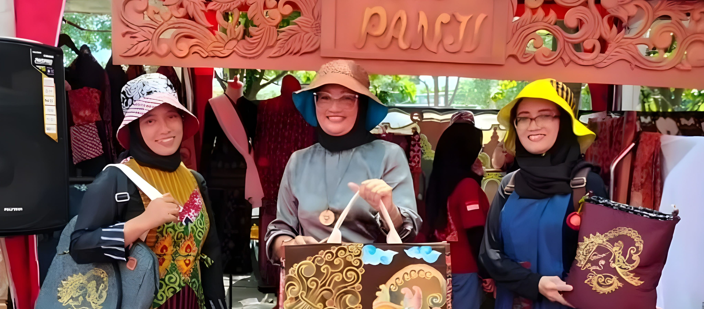
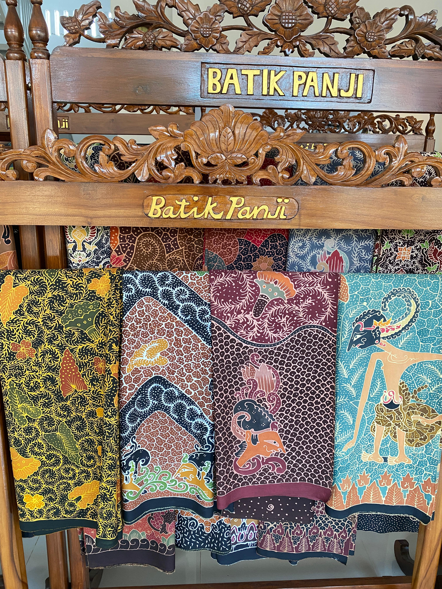
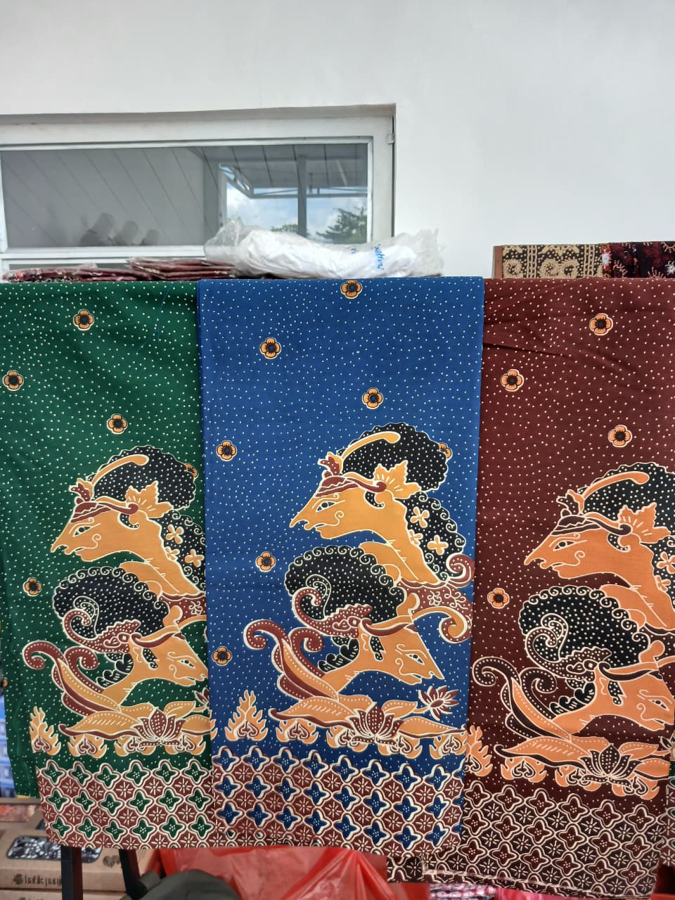
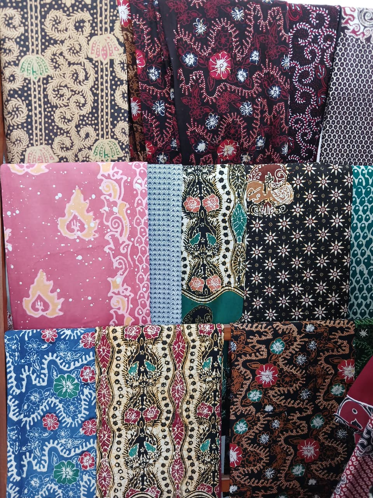
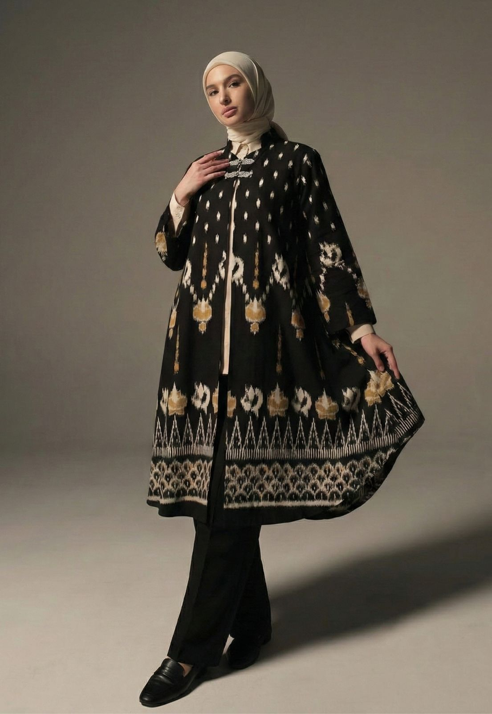
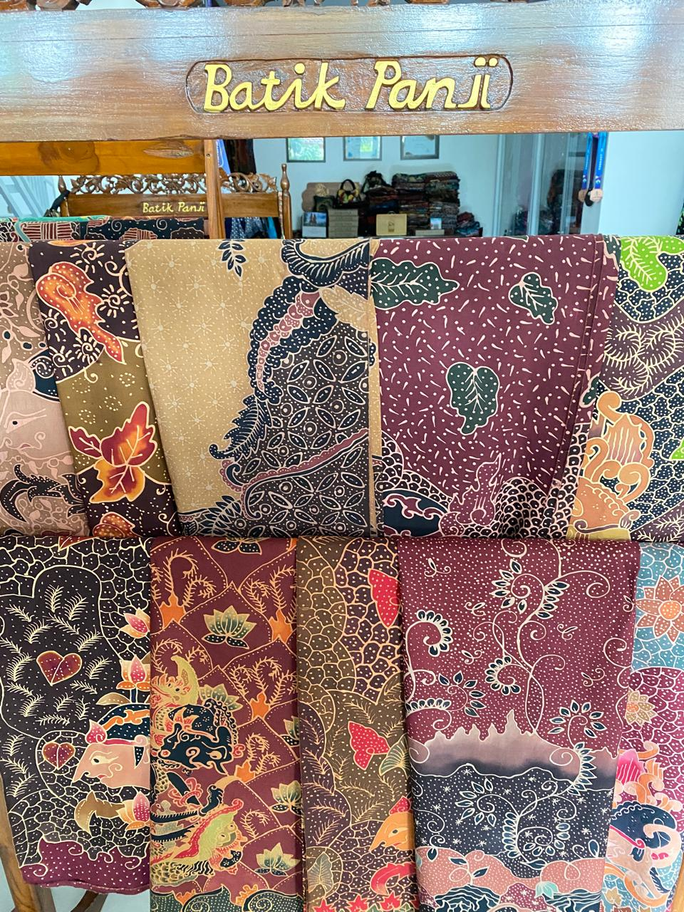
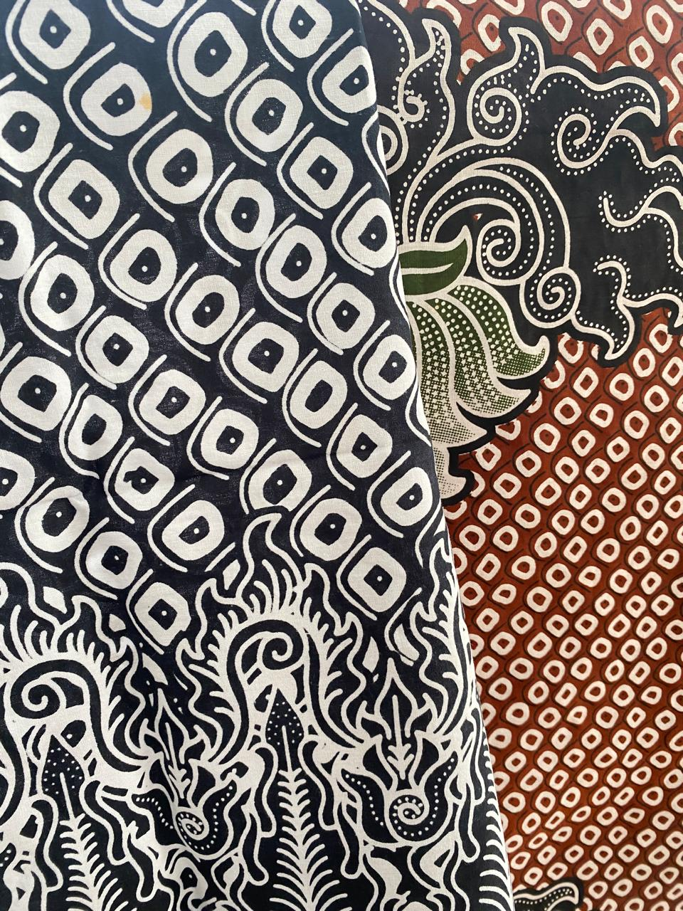
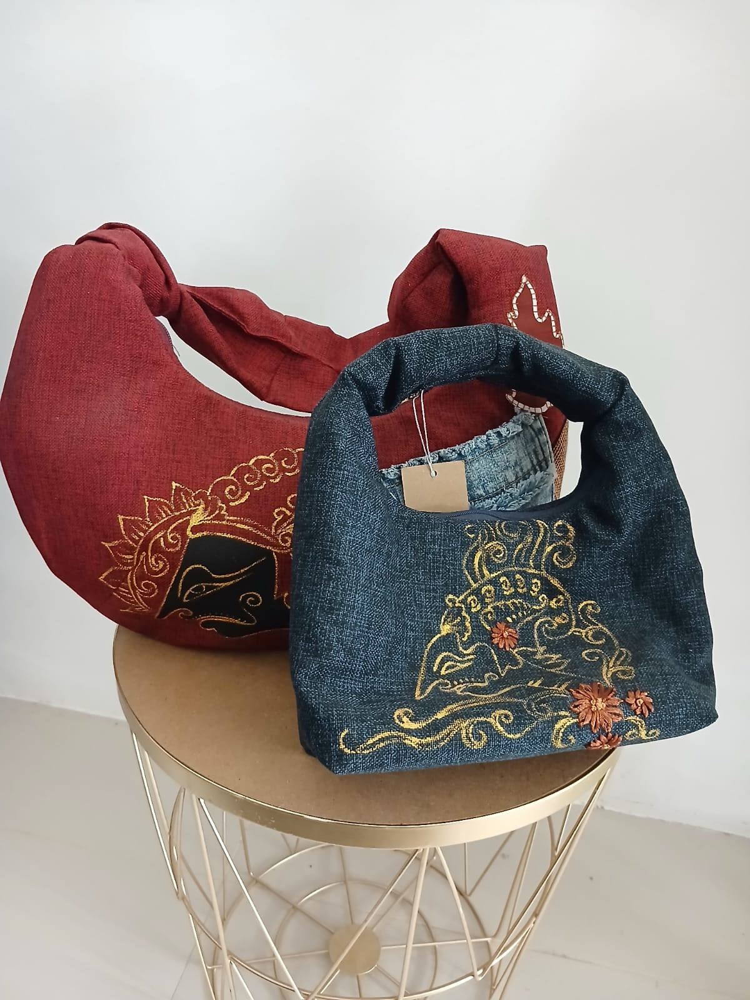
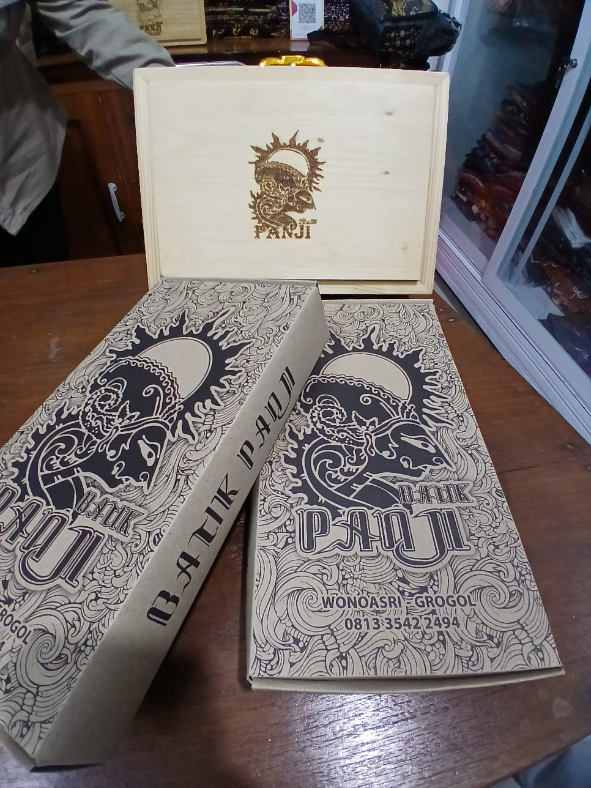

1
Paket Membatik Anak (Tingkat SD/TK)
- Pengenalan Batik Tulis
- Materi teknik membatik sederhana
- Praktik membatik singkat
- Include alat & bahan membatik
Keindahan motif batik tradisional Panji — karya tangan asli, dibuat dengan cinta dan teknik turun-temurun.
Di tengah himpitan pandemi Covid-19 yang melumpuhkan perekonomian khususnya pada warga Desa Wonoasri, Kecamatan Grogol, Kabupaten Kediri, melahirkan inisiatif gemilang: Batik Panji. Saat warga kehilangan lapangan pekerjaan dan mata pencaharian terguncang hebat, Ibu Kepala Desa dengan visi visionernya menggagas pelatihan mandiri yang inovatif. Dari sini, lahir semangat gotong royong yang tak tergoyahkan, mengubah tantangan menjadi peluang emas. Kini, inisiatif ini telah berkembang pesat menjadi pondasi utama ketahanan ekonomi desa, melahirkan deretan pengusaha Mikro, Kecil, dan Menengah (UMKM) yang mandiri dan berdaya saing. Hingga kini, Batik Panji terus bersinar, membuktikan bahwa kreativitas lokal mampu menaklukkan krisis dan membuka jalan kemakmuran berkelanjutan bagi masyarakat Wonoasri.

Batik Panji — Pengrajin batik tradisional yang melestarikan motif Panji dengan teknik tangan dan pewarnaan alami.
Terwujudnya ketahanan ekonomi warga berbasis potensi lokal dan UMKM yang mandiri, kreatif, dan berdaya saing.
Klik gambar untuk melihat detail.

Harga Mulai Rp 300.000

Harga Mulai Rp 150.000

Harga Mulai Rp 200.000

Harga Mulai Rp 250.000

Harga Mulai Rp 200.000

Harga Mulai Rp 150.000

Harga Mulai Rp 150.000

Kami menyediakan paket pengalaman wisata edukasi membatik yang autentik dan menyenangkan. Belajar langsung dari pengrajin berpengalaman: motif tradisional, teknik pewarnaan alami, hingga praktik membatik.
Kami menyediakan layanan persewaan busana batik berkualitas unggul untuk lomba maupun keperluan fashion. Tersedia beragam motif autentik dan model modern, ukuran lengkap — siap pakai, bersih, dan nyaman. Untuk ketentuan sewa dan model lengkap, hubungi kami melalui WhatsApp atau form.
Telepon / WA: +62 813-3542-2494
Alamat: Desa Wonoasri RT 04/RW 03, Kecamatan Grogol, Kabupaten Kediri, Jawa Timur
Jam Operasional: Senin - Sabtu, 08.00 - 17.00